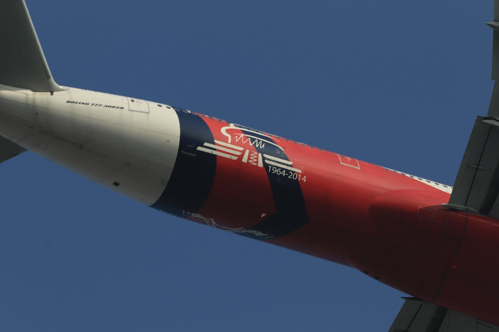

AIRBUS A350: AIRBUS A330: 航空摄影生涯拍摄的第一架飞机 BOEING B787: BOEING B777:  AIRBUS A380: AIRBUS A320: BOEING B737 公务/通航 商飞ARJ21,中国自主研发中短途支线客机 中国空军 CHINA AIR FORCE 2021年7月1日，建党百年，在北京东便门 2021年7月22日，在北京首都国际机场01停车场